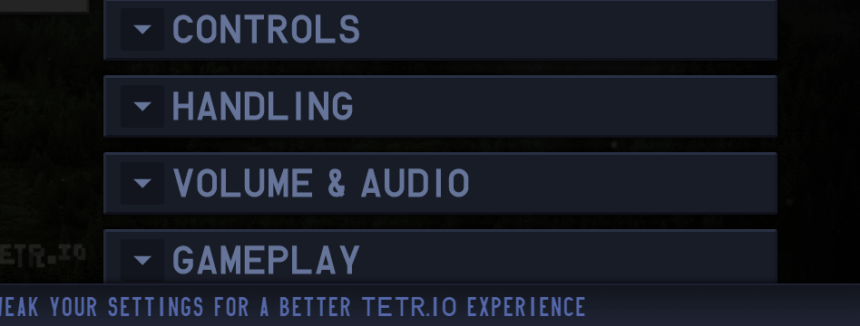
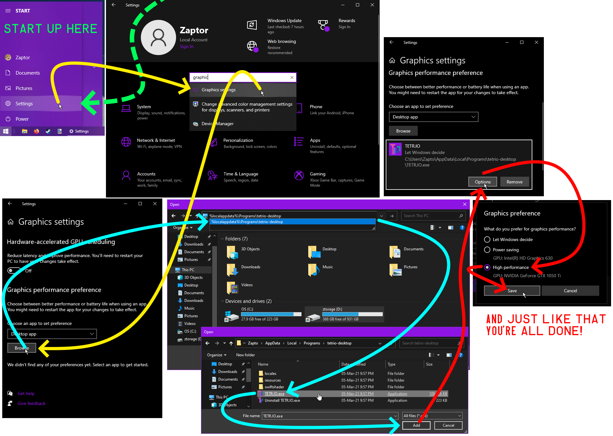
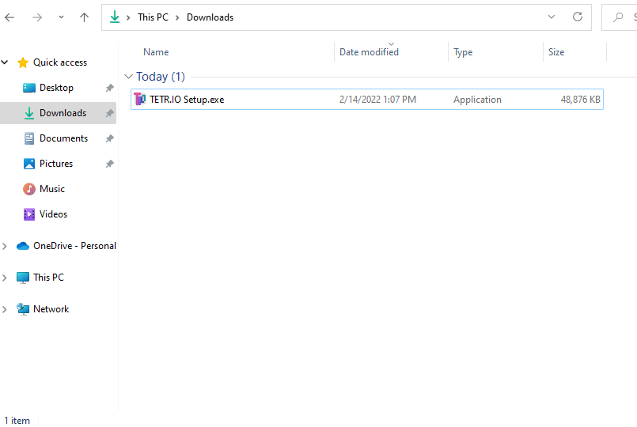
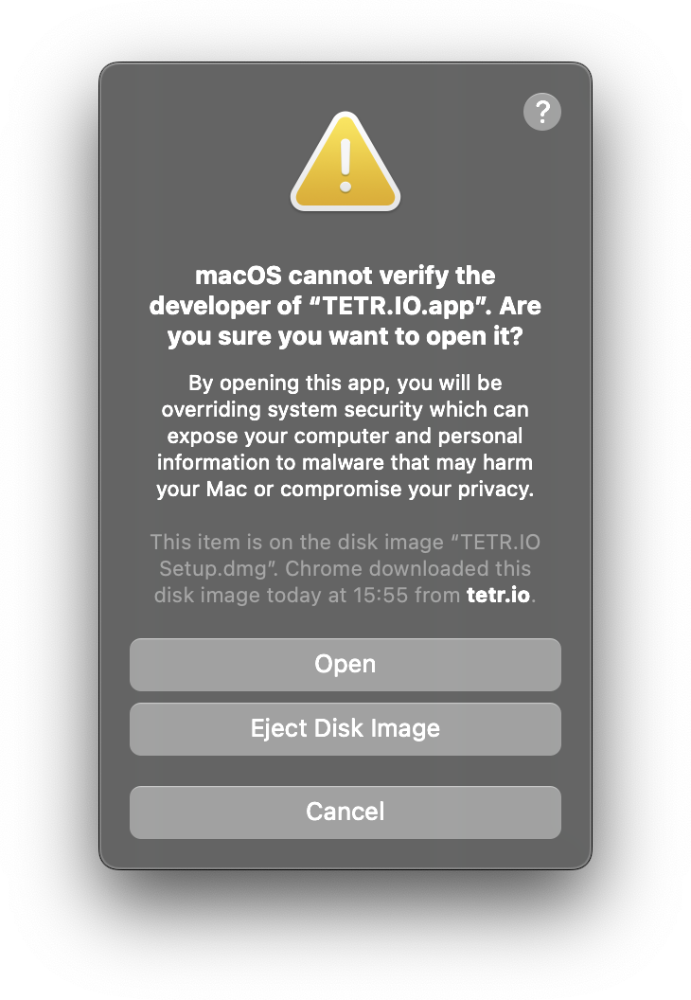
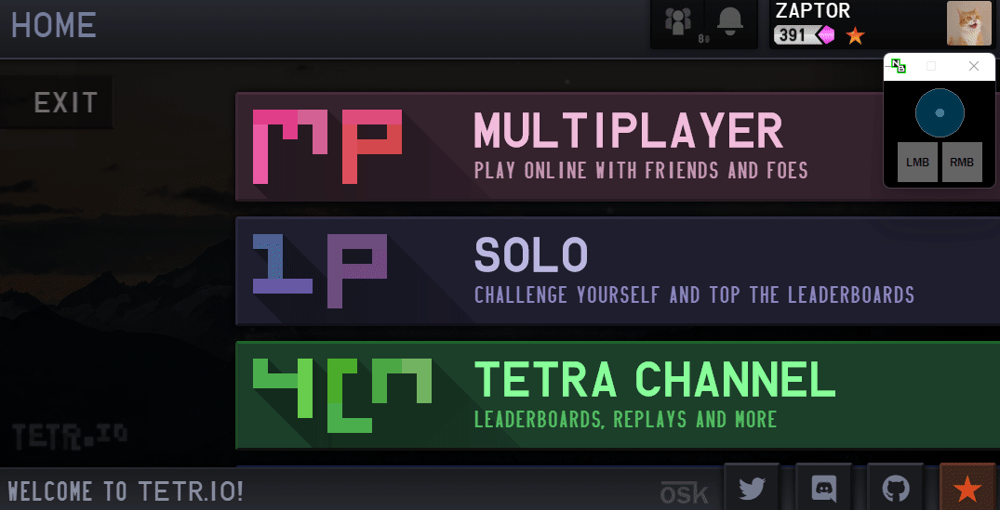

首页
个性化
机制
故障排查
术语
配置
有时你可能只想提升 TETR.IO 的性能，或是使用其它控制设备游玩，本章节将解决相关问题。
TETR.IO ➔ Discord 账户连接link
若想将你的 Discord 账户连接到 TETR.IO，请前往 CONFIG > ACCOUNT > CONNECTIONS（见下图）：
若使用 TETR.IO 桌面版，但在连接账户时出现问题，请转而使用网页版，后者出错的概率更小
该连接能协助 Hiyajo Maho#2356 等 Discord bot 找到你的账号、为 TETR.IO 的支持者（Supporter）授予相应的 Discord 身份，同时辅助角色系统申请表格 的账户验证。在购买或被赠予支持者后，相应的 Discord 身份会在不久后由 @TETR.IO 机器人自动授予（若该机器人在线）。
手柄controllers
TETR.IO 全面支持手柄操作，包括不同动作的手柄震动 。不管你使用的是 TETR.IO 桌面版 还是现代浏览器，你都可以使用手柄流畅游玩 TETR.IO，只需将其连上电脑即可。TETR.IO 能够自动识别 Xbox、Switch Pro 手柄，并为它们自动设置键位。对于 PlayStation 手柄，可在 Guideline 或 WASD 两套预设键位中选择。若成功连接，每次启动游戏并按下手柄按键时，右下角都会弹出手柄连接的提示。
若手柄未能正确识别， 或使用自定义按键设置，可在游戏内手动设置键位：

若手柄无法正常连接，可尝试注意以下问题：
首先，确保未启用有键位映射功能的软件，包括 Steam、JoyToKey ；
确保你使用的是唯一 连接至电脑的控制器。TETR.IO 只接受来自“端口 1”的控制器（可通过其他方法解决这一问题）。若已连接其他控制器，在断开后需要重启电脑才能生效。
若以上两个方法均未能解决问题，以下是两个针对不同手柄的软件：
TETR.IO Desktop Specific Troubleshooting
TETR.IO 桌面版比浏览器快成百上千倍！官方 桌面客户端
—— 游戏内横幅广告，2021年
指定图形处理器dgpu
若感觉笔记本电脑中 TETR.IO 网页版或桌面版游戏很卡，请确保 Windows 使用的是“独立图形处理器”，而不是牺牲画质换取功效的“集成图形处理器”。下面给出一张为游戏指定图形处理器的大图：
在Windows 11 中：
于开始菜单打开设置（或使用 Win + I 快捷键）；
搜索“屏幕”设置项，点击“相关设置”中的“显示卡”设置项；
选择“添加桌面应用”。点击浏览，在弹出的窗口中输入 TETR.IO 桌面版或浏览器的启动路径；
选中桌面版或浏览器的 .exe 文件；
选中 TETR.IO 或浏览器。点击选项，再点击“高性能”，完成。

TETR.IO 桌面版 .exe 文件的路径：%localappdata%\\Programs\\tetrio-desktop\\resources
Chrome.exe 的路径：%programfiles%\\Google\\Chrome\\Application\\chrome.exe、 %programfiles(x86)%\\Google\\Chrome\\Application\\chrome.exe、或 %localappdata%\\Google\\Chrome\\Application\\chrome.exeFirefox.exe 的路径： %programfiles(x86)%\\Mozilla Firefox\\ or %programfiles%\\Mozilla Firefox\\后两者的路径根据你使用 32 位系统或 64 位系统决定。
无法安装桌面版installstuck
若无法通过安装 TETR.IO 桌面版，请尝试以下步骤：下载一款压缩软件（如 7zip ，手动解压文件，详细过程请看下图（用压缩软件打开 .exe 文件，然后把 app-64.7z 解压到任意文件夹即可）：

无法在 macOS 上安装machelp

只有右键单击或 “control 单击” TETR.IO 桌面版安装文件时，另外两个按钮才会出现。
尝试在 macOS 上安装 TETR.IO 时，系统会弹出信息，警告程序的开发者未认证。若从正规渠道，也即https://tetr.io/about/desktop 官方下载链接获取安装程序，可忽略该警告。要想安装，只需右击 或control - 单击 安装文件，在弹出的窗口中选择“打开”（Open）即可。
若仍无法安装，请参阅苹果官网给出的这篇指南 。
安装路径installpaths
使用 TETR.IO 桌面版会在以下路径创建文件夹，使用 Windows + R，在弹出的窗口复制以下路径：
%localappdata%\Programs\tetrio-desktop
（含有 .exe 文件与 Resources 文件夹）
%localappdata%\tetrio-desktop-updater
（你所下载的 TETR.IO 桌面版对应版本的安装程序，运行可抹去你对游戏做出的任何修改）%appdata%\TETR.IO
（有一名为 “logs” 的空文件夹）
%appdata%\tetrio-desktop
（包含 Electron 相关的浏览器文件，如 Cache 与 Local Storage）
回放录像
加载回放的方式很简单，但很多玩家不知道如何操作。本章节将解决这一问题。参见：
要观看本地保存的录像，只需将资源管理器中的录像文件拖拽至 TETR.IO 窗口中即可。若游戏无法加载录像，请保证回放命名正确，尤其是以下几点：
单人游戏的回放使用 .ttr 后缀；
多人游戏的回放使用 .ttrm 后缀；
自定义模式的预设使用 .ttp 后缀；
设置配置文件使用 .ttc 后缀。

若加载 .ttrm 文件，点击任意一局以查看那一局的回放。
私房回放ttrm
若跳过了结算页，未保存回放，可在聊天框输入 /savereplay 指令保存上一场游戏的录像。
私房回放的要求较为严苛，所以，就算没有“下载回放”的按钮，也不要怪自己。具体而言，只有满足以下所有条件的对局才会生成回放：
移动设备支持
首先需要澄清一下谣言，TETR.IO 永远不会正式支持移动设备。
It's a lot of effort, for a userbase who I am not particularly interested in reaching (.io game players are already very detached from the game, mobile gaming is even more so). I might do it in the future, but for now I do not have particular interest in the mobile gaming sphere
furthermore, for now I am not interested in targeting a mobile demographic. tetr.io is already enough of an "io game", don't need to literally make it a mobile game.
i do not plan on mobile support or an app, period
参考译文：
工作量太大，而且我对手游用户没兴趣（.io 游戏用户群体本身就离我们这款游戏很远了，手游玩家只会更远）。我未来可能会考虑支持移动设备，但我现在对手游圈没有足够的兴趣。
而且现在我不对手游玩家感兴趣。tetr.io 作为一款 “io 游戏” 已经足够了，没必要再把它做成一款手机游戏。
我不打算支持移动设备，或是开发 app，句号
— osk，发表于不同时间点 [1] [2]
话虽如此，玩家依然可以在移动设备上游玩 TETR.IO 。请注意：iOS 设备的兼容性有待测试 。欢迎玩家使用其他安卓设备测试游玩，但由于移动设备不受官方支持，游戏的兼容性不受保障。
要在手机登移动设备上游玩，只需通过浏览器访问 https://tetr.io/ 即可。游玩的最大问题在于如何控制，你可以使用蓝牙或 USB 连接输入设备，在配置中设置键位。
或者，使用 JavaScript 代码制成的书签来支持屏幕点按操作 。可访问这个网站 获取更多帮助。